特征检测就是检测图像中目标的特征。所谓特征就是不管你怎么旋转目标，离目标远近，它的特征都应该不变，这两个特性称为旋转不变性和尺度不变性。当然还有其他特征，如光照不一样等等。特征检测的对象可包括特征点检测、边缘检测等。
1.1 点与块
点特征可以用来寻找一个不同图像中对应位置的稀疏集合，称之为关键点，其优点在于它们能够在出现遮挡、大的尺度和方向变化的情况下很好的匹配。
匹配分方法有两种：第一种是在第一幅图像中寻找那些可以使用局部搜索方法来精确跟踪的特征，比如相关或最小二乘；第二种方法是在所有考察的图像中独立地检测特征点然后再基于它们的局部表现进行匹配。
本节将关键点检测和匹配分成四个阶段。在特征检测阶段，从每一幅图像中寻找那些能在其他图像中较好匹配的位置；在特征描述阶段，把检测到的关键点周围的每一个区域转化成一个更紧凑和稳定（不变）的描述子，描述子可以和其他描述子进行匹配；特征匹配阶段，在其他图像中高效地搜索可能的匹配候选；特征跟踪阶段，与第三阶段相似，只在检测到的特征点周围一个小的邻域内寻找匹配，更加适合视频处理。
1.1.1 特征检测器
怎样才能找到能够在其他图像中稳定匹配的图像位置，也就是说什么是适合跟踪的特征？
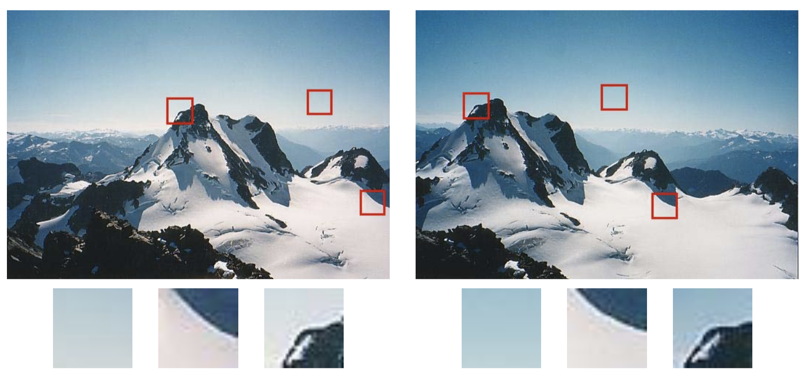
如上图，对于两幅视角不同的同一幅图像能够被很好的匹配和跟踪。武鸣县纹理结构的图像快几乎不可能定位，而拥有较大对比度变化（梯度）的则比较容易定位，并且至少拥有至少两个（明显）不同方向梯度的图像块最容易定位。
用最简单的匹配策略来比较两个图像块，加权差的平方和
其中$I_0,I_1$是两幅需要比较的图像，$u=(u,v)$是平移向量，$w(x)$是在空间上变化的权重（或窗口）函数，求和变量$i$作用于块中全体的像素。
我们用原图像块的自相关函数来衡量该图像块被匹配的”难易程度”|
如下图所示，对于有纹理花坛的自相关表面存在一个很强的最小值，这表明它很容易定位（如图b,图a右下角红十字），而对于房顶边缘的自相关表面在一个方向上存在很大的歧义性（如图c），而对应于云朵区域的自相关表面则没有稳定的最小值（如图d）
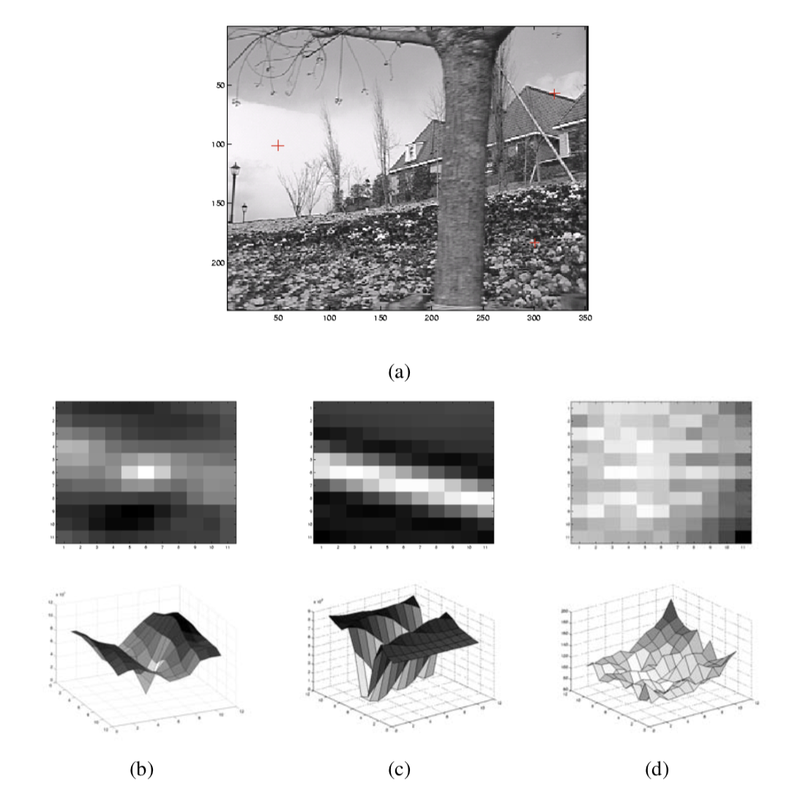
对上述图像块的自相关函数近似处理
其中 $\nabla I_{0}\left(\boldsymbol{x}_{i}\right)=\left(\frac{\partial I_{0}}{\partial x}, \frac{\partial I_{0}}{\partial y}\right)\left(x_{i}\right)$是$x_i$处的”图像梯度”。梯度的计算可以采用多种方法。经典的Harris检测器采用了滤波器，现在更为普遍的则是采用水平方向上和垂直方向的高斯函数的导数对图像进行卷积。
自相关矩阵$A$可以写作
其中，$w(x,y)$是窗口函数，最简单情形就是窗口内的所有像素所对应的w权重系数均为1。但有时候，我们会将$w(x,y)$函数设定为以窗口中心为原点的二元正态分布。如果窗口中心点是角点时，移动前与移动后，该点的灰度变化应该最为剧烈。
根据上述表达式，当窗口处在平坦区域上滑动，可以想象的到，灰度不会发生变化，那么$E_{AC}$ = 0；如果窗口处在比纹理比较丰富的区域上滑动，那么灰度变化会很大。算法最终思想就是计算灰度发生较大变化时所对应的位置，当然这个较大是指针任意方向上的滑动，并非单指某个方向。
Harris角点检测
难道我们是直接求上述的$E_{AC}$值来判断角点吗？Harris角点检测并没有这样做，而是通过对窗口内的每个像素的$x$方向上的梯度与y方向上的梯度进行统计分析。这里以$I_x$和$I_y$为坐标轴，因此每个像素的梯度坐标可以表示成$(I_x,I_y)$。针对平坦区域，边缘区域以及角点区域三种情形进行分析：
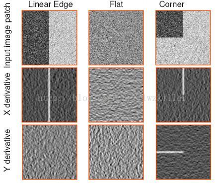
平坦区域上的每个像素点所对应的$(I_x,I_y)$坐标分布在原点附近，其实也很好理解，针对平坦区域的像素点，他们的梯度方向虽然各异，但是其幅值都不是很大，所以均聚集在原点附近；边缘区域有一坐标轴分布较散，至于是哪一个坐标上的数据分布较散不能一概而论，这要视边缘在图像上的具体位置而定，如果边缘是水平或者垂直方向，那么$I_y$轴方向或者$I_x$方向上的数据分布就比较散；角点区域的x、y方向上的梯度分布都比较散。我们是不是可以根据这些特征来判断哪些区域存在角点呢？
参考PCA对自相关矩阵$A$进行均值化和对角化，很明显，特征值就是主分量上的方差。如果存在两个主分量所对应的特征值都比较大，说明什么？ 像素点的梯度分布比较散，梯度变化程度比较大，符合角点在窗口区域的特点；如果是平坦区域，那么像素点的梯度所构成的点集比较集中在原点附近，因为窗口区域内的像素点的梯度幅值非常小，此时矩阵A的对角化的两个特征值比较小；如果是边缘区域，在计算像素点的x、y方向上的梯度时，边缘上的像素点的某个方向的梯度幅值变化比较明显，另一个方向上的梯度幅值变化较弱，其余部分的点都还是集中原点附近，这样A对角化后的两个特征值理论应该是一个比较大，一个比较小，当然对于边缘这种情况，可能是呈45°的边缘，致使计算出的特征值并不是都特别的大，总之跟含有角点的窗口的分布情况还是不同的。
- 特征值都比较大时，即窗口中含有角点
- 特征值一个较大，一个较小，窗口中含有边缘
- 特征值都比较小，窗口处在平坦区域
通常用下面表达式进行度量：
其中k是常量，一般取值为0.04~0.06，这个参数仅仅是这个函数的一个系数，它的存在只是调节函数的形状而已。最后设定R的阈值，进行角点判断。
Harris算子对图像尺度变化非常敏感，因此不适合用于不同尺度的图像匹配。
非极大值抑制(Non-Maximum Suppression,NMS)
顾名思义就是抑制不是极大值的元素，可以理解为局部最大搜索。这个局部代表的是一个邻域，邻域有两个参数可变，一是邻域的维数，二是邻域的大小。此处主要说明NMS用于目标检测中提取分数最高的窗口的。例如在行人检测中，滑动窗口经提取特征，经分类器分类识别后，每个窗口都会得到一个分数。但是滑动窗口会导致很多窗口与其他窗口存在包含或者大部分交叉的情况。这时就需要用到NMS来选取那些邻域里分数最高（是行人的概率最大），并且抑制那些分数低的窗口。NMS在计算机视觉领域有着非常重要的应用，如视频目标跟踪、数据挖掘、3D重建、目标识别以及纹理分析等。
核心思想：选取那些邻域里分数最高的窗口，同时抑制那些分数低的窗口
原理：对所有检测到的检测框按照他们的得分进行排序（这个得分就是我们利用分类器来进行时，会得到一个概率值，这个概率值就表示当前检测框是我们所需要检测目标的概率大小。）选出得分最大的检测框A，设定阈值b，在剩下的检测框中，计算他们与最大检测框A之间的IoU（Intersection over Union），若IoU大于阈值b，即重叠率高的检测框。删除这些检测框；有可能存在与当前检测框完全不重叠的，或者他们的重叠面积非常小（IoU小于阈值b），接下来会对这些没有处理过的检测框重新进行排序，排序完成后同样选择一个得分最大的检测框，然后计算其他检测框与这个最大检测框的IoU值，然后将IoU大于一定阈值的检测框再进行一次删除，不断的迭代这个过程，直到所有的检测框都被处理之后，输出最后的检测结果。

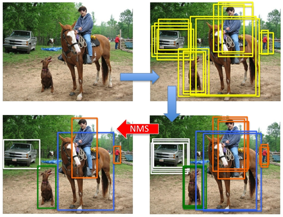
衡量可重复性
计算机视觉领域中开发有各种各样的特征检测器，我们如何决定使用哪一个呢? 将这个可重复性定义为在一幅图像中检测到的关键点在另一幅变换过的图像中的对应位置的ε(比如ε=1.5)个像素范围内找到的频率。这种变换包括对平面图像进行各种变换，包括旋转、尺度变化，光照变化、视角变化以及增加噪声等。
Harris+尺度不变筛选
对于大多数物体识别应用，图像中物体的尺度是不知道，相比于在多个不同尺度上提取特征后再全部匹配，提取所有位置和尺度都稳定的特征更高效。
虽然尺度不变特征变换(SIFT)在实践中效果很好，但它的理论基础并不是基于最大化空间稳定性的，这与基于自相关性的检测器不同。(事实上，它的检测位置经常与那些方法所产生的检测位置互补，因此可以和那些方法一起使用。)为了给Harris角点检测提供-一个 尺度选择的机制，在每个检测到的Harris位置评估高斯拉普拉斯函数(在一个多尺度金字塔上)，然后只保留那些拉普拉斯函数取极值(比它高一级的尺度和低一级的尺度的值都大或者都小）的点。
旋转不变和方向估计
为了处理旋转变化，需要设计出旋转不变的描述子。但是这些描述子区分性比较弱，也就是说，对于同一个描述子，它们映射出不同的查找块。
一个较好的办法就是在检测到的每一个关键点估计一个”主导方向”，一旦估计出一个关键点的局部方向和尺度，就可以在检测出的关键点附近提取出一个特定尺度和方向的图像块。
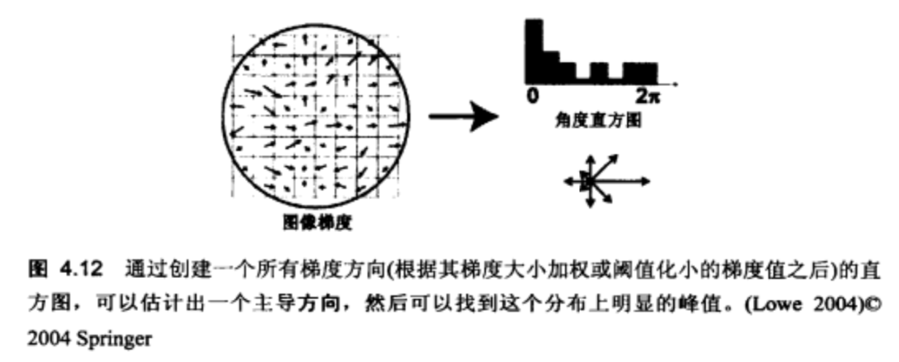
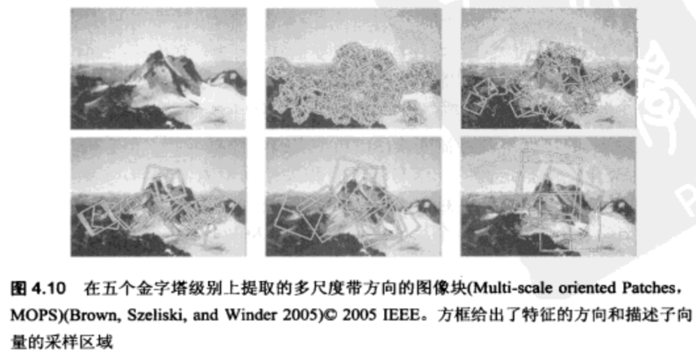
仿射不变
【待补充】
1.1.2 特征描述子
物体识别的核心问题是将同一目标在不同时间、不同分辨率、不同光照、不同位姿情况下所成的像相相匹配。而为了进行匹配，我们首先要合理的表示图像。由于目标的自身状态、场景所处的环境的影响，同一类物体在不同的图像中所成的像往往会差别很大，但即使这样，人们所能通过同一物体的一些局部共性来识别出物体（正如我们能将不同国家民族的人区分出来）。所谓局部特征描述子就是用来刻画图像中的这些局部共性的，而我们也可以将一幅图像映射（变换）为一个局部特征的集合。理想的局部特征应具有平移、缩放、旋转不变性，同时对光照变化、仿射及投影影响也应有很好的鲁棒性。
在特征匹配中，特征描述子通常是用于N维向量，在光照不变以及少许透视变形的情况下很理想。另外，优质的描述子可以通过简单的距离测量进行比较，比如欧氏距离。如我们想匹配同一个场景中的两幅图像。首先，我们检测每幅图像中的特征，然后提取他们的描述子。第一幅图像中的每一个特征描述子向量都会与第二幅图中的描述子进行比较，得分最高的一对描述子，也就是两个向量的距离最近，将被视为那个特征的最佳匹配。
方向梯度直方图（HOG描述子）
该特征通过计算和统计图像局部区域的梯度方向直方图来构成特征。其优点是可以对几何和光学的形变保持很好的不变形，换句话说，对环境的变化具有很强的鲁棒性。
该特征的主要思想是：图像中局部目标的表象和性状能够被梯度或边缘的方向密度很好的描述本（本质：梯度的统计信息，而梯度主要存在于边缘的地方）。在实际操作中，将图像分为小的细胞单元(cells)，每个细胞单元计算一个梯度方向(或边缘方向)直方图。为了对光照和阴影有更好的不变性，需要对直方图进行对比度归一化，可以通过将细胞单元组成更大的块(blocks)并归一化块内的所有细胞单元来实现。我们将归一化的块描述符叫做HOG描述子。将检测窗口中的所有块的HOG描述子组合起来就形成了最终的特征向量。
下面我们来介绍HOG特征的提取过程：
1、灰度化，因为Hog特征提取的是纹理特征，颜色信息不起作用，所以现将彩色图转为灰度图；
２、归一化，为了提高检测器对光照等干扰因素的鲁棒性，需要对图像进行Gamma校正，以完成对整个图像的归一化，目的是调节图像的对比度，降低局部光照和阴影所造成的影响，同时也可以降低噪音的干扰；（当r取1/2时，像素的取值范围就从0~255变换到0~15.97）
Gamma校正的映射公式，一般ｒ取１/２
３、计算图像像素的梯度：根据下面的公式计算每个像素的水平方向和竖直方向的梯度，并计算每个像素位置的梯度大小和方向。图像在像素点（ｘ，ｙ）处的水平方向和垂直方向的梯度为：
Gx(x,y) 和Gy(x,y) 分别表示当前像素点（x,y）处的水平方向和垂直方向梯度值
接下来我们计算像素点（x,y）处的梯度幅值和梯度方向:
４、统计细胞单元（Cell）的梯度方向直方图：将图像划分成小的Cell，将梯度方向映射到180度的范围内，将像素的梯度幅值作为权值进行投影，用梯度方向决定向哪一维进行投影，假如该像素的梯度方向为20度,梯度幅值为10，那么直方图的第二维就加10。下图是一个细胞单元内的方向梯度直方图，角度分辨率是在180度的范围内，以20度等分，即一个细胞单元的HOG特征是一个9维的向量。
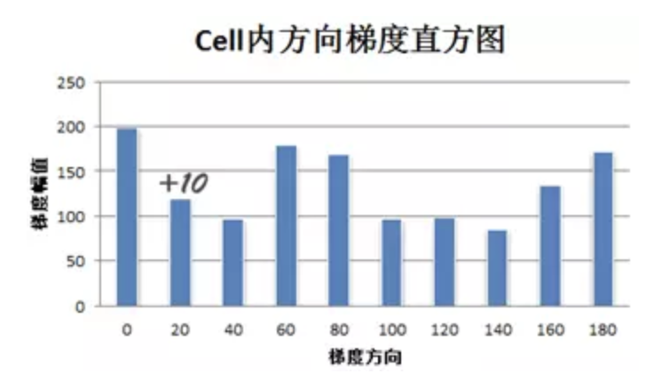
一个细胞单元的梯度方向直方图
５、统计块（Block）的梯度方向直方图：统计每个细胞单元内的梯度直方图，形成每个细胞单元的描述子，由cell组成更大的描述子，称为块，将一个块内四个cell的特征向量串联起来就构成了该块的梯度方向直方图，按照一个细胞单元是9维的Hog特征，则一个块的Hog特征为4x9=36维。由于局部光照的变化，以及前景背景对比度的变化，使得梯度强度的变化范围非常大，这就需要对梯度做局部对比度归一化。这里的策略是针对每个块进行对比度归一化，一般使用L2-norm。
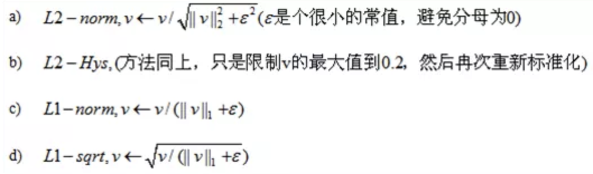
6、统计窗口（Window）的梯度方向直方图：只需要将窗口内所有块的Hog特征向量串联起来就得到了Window的Hog特征；
7、统计整幅图像的梯度方向直方图：一幅图像可以无重叠的划分为多个Window，这时将所有Window的特征向量串联起来就是整幅图像的Hog特征了，如果Window的大小和图像的大小相同，那么Window的Hog特征就是整幅图像的Hog特征，这也是最终分类使用的特征向量。大功告成！
尺度不变特征变换（SIFT）
成像匹配的核心问题是将同一目标在不同时间、不同分辨率、不同光照、不同位姿情况下所成的像相对应。传统的匹配算法往往是直接提取角点或边缘，对环境的适应能力较差，急需提出一种鲁棒性强、能够适应不同光照、不同位姿等情况下能够有效识别目标的方法。1999年British Columbia大学大卫.劳伊（ David G.Lowe）教授总结了现有的基于不变量技术的特征检测方法，并正式提出了一种基于尺度空间的、对图像缩放、旋转甚至仿射变换保持不变性的图像局部特征描述算子－SIFT（尺度不变特征变换），这种算法在2004年被加以完善。
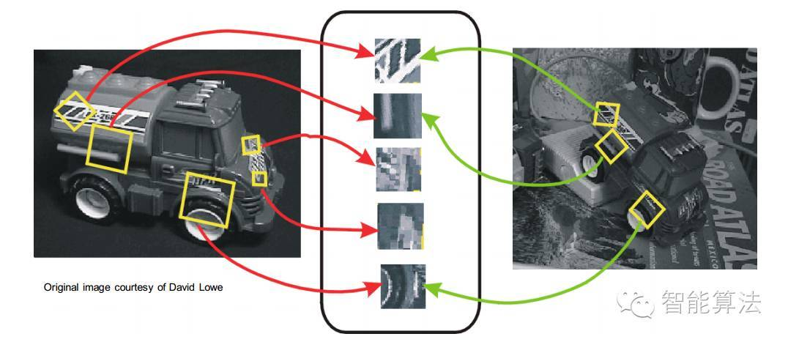
算法思想
将一幅图像映射（变换）为一个局部特征向量集；特征向量具有平移、缩放、旋转不变性，同时对光照变化、仿射及投影变换也有一定不变性。
步骤简述
SIFT算法的实质可以归为在不同尺度空间上查找特征点（关键点）的问题。
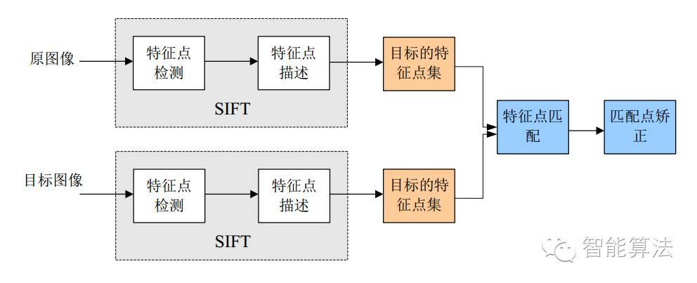
1、提取关键点；
2、对关键点附加详细的信息（局部特征）也就是所谓的描述器；
3、通过两方特征点（附带上特征向量的关键点）的两两比较找出相互匹配的若干对特征点，也就建立了景物间的对应关系。
算法细节
1、构建尺度空间
这是一个初始化操作，尺度空间理论目的是模拟图像数据的多尺度特征。高斯核是唯一可以产生多尺度空间的核，一个图像的尺度空间， L（ x,y,σ) ,定义为原始图像I(x,y)与一个可变尺度的2维高斯函数G(x,y,σ) 卷积运算。尺度是自然存在的，不是人为创造的！高斯卷积只是表现尺度空间的一种形式
其中$ G(x,y,σ) $是尺度可变高斯函数$（x，y）$是空间坐标，是尺度坐标。σ大小决定图像的平滑程度，大尺度对应图像的概貌特征，小尺度对应图像的细节特征。大的σ值对应粗糙尺度(低分辨率)，反之，对应精细尺度(高分辨率)。为了有效的在尺度空间检测到稳定的关键点，提出了高斯差分尺度空间（DOG scale-space）。利用不同尺度的高斯差分核与图像卷积生成。
下图所示不同σ下图像尺度空间：
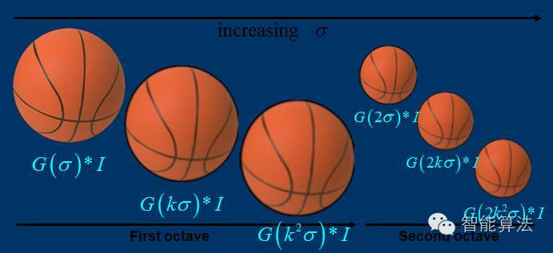
图像金字塔的建立：
对于一幅图像I,建立其在不同尺度(scale)的图像，也成为子八度（octave），这是为了scale-invariant，也就是在任何尺度都能够有对应的特征点，第一个子八度的scale为原图大小，后面每个octave为上一个octave降采样的结果，即原图的1/4（长宽分别减半），构成下一个子八度（高一层金字塔）。
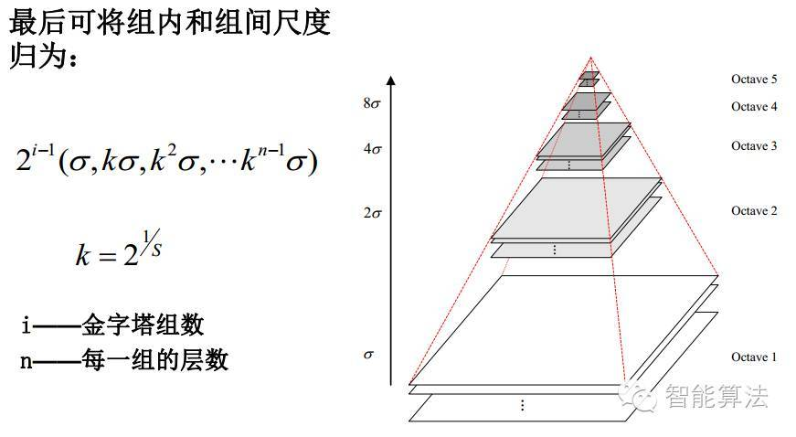
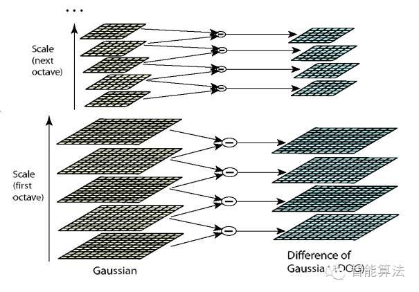
由图片size决定建几个塔，每塔几层图像(S一般为3-5层)。0塔的第0层是原始图像(或你double后的图像)，往上每一层是对其下一层进行Laplacian变换（高斯卷积，其中σ值渐大，例如可以是σ, kσ, kk*σ…），直观上看来越往上图片越模糊。塔间的图片是降采样关系，例如1塔的第0层可以由0塔的第3层down sample得到，然后进行与0塔类似的高斯卷积操作。
2、关键点检测
为了寻找尺度空间的极值点，每一个采样点要和它所有的相邻点比较，看其是否比它的图像域和尺度域的相邻点大或者小。如图所示，中间的检测点和它同尺度的8个相邻点和上下相邻尺度对应的9×2个点共26个点比较，以确保在尺度空间和二维图像空间都检测到极值点。 一个点如果在DOG尺度空间本层以及上下两层的26个领域中是最大或最小值时，就认为该点是图像在该尺度下的一个特征点,如图所示。
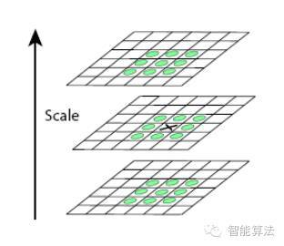
同一组中的相邻尺度（由于k的取值关系，肯定是上下层）之间进行寻找，在极值比较的过程中，每一组图像的首末两层是无法进行极值比较的，为了满足尺度变化的连续性，我们在每一组图像的顶层继续用高斯模糊生成了3幅图像，高斯金字塔有每组S+3层图像。 DOG金字塔每组有S+2层图像。下图中s=3
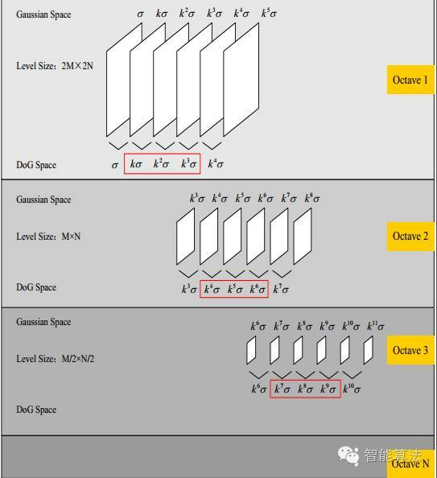
这里解释下尺度变化的连续性：
假设s=3，也就是每个塔里有3层，则k=21/s=21/3，那么按照上图可得Gauss Space和DoG space 分别有3个（s个）和2个（s-1个）分量，在DoG space中，1st-octave两项分别是σ,kσ; 2nd-octave两项分别是2σ,2kσ;由于无法比较极值，我们必须在高斯空间继续添加高斯模糊项，使得形成σ,kσ,k2σ,k3σ,k4σ这样就可以选择DoG space中的中间三项kσ,k2σ,k3σ（只有左右都有才能有极值），那么下一octave中（由上一层降采样获得）所得三项即为2kσ,2k2σ,2k3σ，其首项2kσ=24/3。刚好与上一octave末项k3σ=23/3尺度变化连续起来，所以每次要在Gaussian space添加3项，每组（塔）共S+3层图像，相应的DoG金字塔有S+2层图像。
3、消除错配点
由于DoG值对噪声和边缘较敏感,因此,在上面DoG尺度空间中检测到局部极值点还要经过进一步的检验才能精确定位为特征点。为了提高关键点的稳定性，需要对尺度空间DoG函数进行曲线拟合。利用DoG函数在尺度空间的Taylor展开式：
对上式求导,并令其为0,得到精确的位置, 得
在已经检测到的特征点中,要去掉低对比度的特征点和不稳定的边缘响应点。去除低对比度的点：把上式代入其中，即在DoG Space的极值点处D(x)取值，只取前两项可得：
若$|D(\hat x)|\geq 0.03$，该特征点就保留下来，否则丢弃。
4、关键点描述
上一步中确定了每幅图中的特征点，为每个特征点计算一个方向，依照这个方向做进一步的计算， 利用关键点邻域像素的梯度方向分布特性为每个关键点指定方向参数，使算子具备旋转不变性。
为(x,y)处梯度的模值和方向公式。其中L所用的尺度为每个关键点各自所在的尺度。至此，图像的关键点已经检测完毕，每个关键点有三个信息：位置，所处尺度、方向，由此可以确定一个SIFT特征区域。
计算keypoint周围的16*16的window中每一个像素的梯度，而且使用高斯下降函数降低远离中心的权重（高斯下降函数使得离关键点越近权重越大，越远越小）。
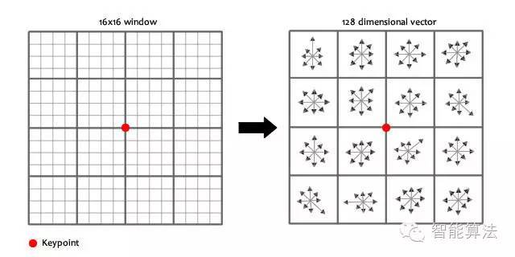
在每个44的1/16象限中，通过加权梯度值加到直方图8个方向区间中的一个，计算出一个梯度方向直方图。这样就可以对每个feature形成一个448=128维的描述子，每一维都可以表示44个格子中一个的scale/orientation. 将这个向量归一化之后，就进一步去除了光照的影响。
5、关键点匹配
生成了A、B两幅图的描述子，（分别是k1128维和k2128维），就将两图中各个scale（所有scale）的描述子进行匹配，匹配上128维即可表示两个特征点match上了。
此时SIFT特征向量已经去除了尺度变化、旋转等几何变形因素的影响，再继续将特征向量的长度归一化，则可以进一步去除光照变化的影响。 当两幅图像的SIFT特征向量生成后，下一步我们采用关键点特征向量的欧式距离来作为两幅图像中关键点的相似性判定度量。取图像1中的某个关键点，并找出其与图像2中欧式距离最近的前两个关键点，在这两个关键点中，如果最近的距离除以次近的距离少于某个比例阈值，则接受这一对匹配点。降低这个比例阈值，SIFT匹配点数目会减少，但更加稳定。
1.1.3 特征匹配
分两个阶段来考虑，第一阶段是选择一个匹配策略，用来确定哪些匹配将被传到下一阶段进行进一步处理；第二阶段是设计出行之有效的数据结构和算法来尽可能快的完成这个匹配。
匹配策略和错误率
给定一个欧式距离度量，最简单的一个匹配策略就是先设定-一个阈值(最大距离)，然后返回在这个阈值范围之内的其他图像中的所有匹配。这个阈值如果设的太高，就会产生很多“误报”(false positive)，也就是说，返回了不正确的匹配。这个阈值设的太低的话就会产生很多“漏报”(false negative), 也就是说，很多正确的匹配被丢失了。
我们可以在一个特定阈值上对一个匹配算法的性能进行量化，通过使用下面的定义(Fawcett2006)来计算正确和错误匹配及匹配失败的数目。
TP：正确肯定，也就是正确匹配的数目;
FN：漏报，没有正确找到的匹配的数目;
FP：误报，给出的匹配是不正确的;
TN：正确否定，正确拒绝的非匹配对。
则混淆矩阵：
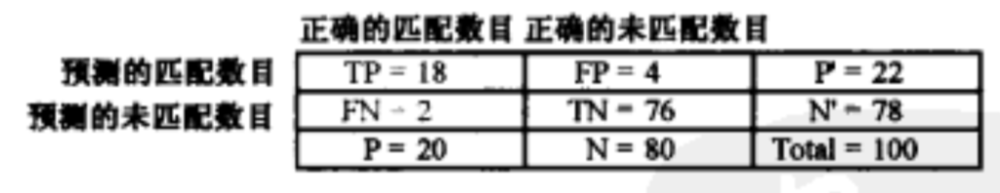
正确肯定率（TPR）：
错误肯定率（FPR）：
肯定预测值（PPV）：
精确度（ACC）：
一个启发式的匹配策略是比较最近邻距离和次近邻距离，这个次近邻距离是从已知的和目标不匹配的一幅图像中取得的。我们可以定义这个最近邻距离比率
其中$d_1$和$d_2$是最近邻的和次近邻距离，$D_A$是目标描述子（特征向量），$D_B$和$D_C$是它的最近的两个邻居。
高效匹配
匹配策略已经确定，接下来就需要确定搜索匹配策略，两幅图像匹配的一般策略的复杂度是提取特征数目的二次方，在应用中不太现实，所以需要改进搜索匹配策略。
【此部分待补充】
1.1.4 特征跟踪
在所有候选图像中独立地寻找特征然后将它们进行匹配，另一种替代策略是，在第一幅图像中寻找可能的特征位置集合，然后在后续的图像中搜索它们的对应位置。这类“先检测后跟踪”(detect and track)的方法在视频跟踪应用中使用得非常广泛，这里，所期望的相邻帧之间的运动和表观的变形比较小。
选择好特征来跟踪的过程和选择好特征来进行更一般的识别应用紧密相关。在实际中，那些在两个方向上梯度值均大的区域，也就是，自相关矩阵拥有大的特征
值的区域，提供了可用于寻找对应的稳定的位置。